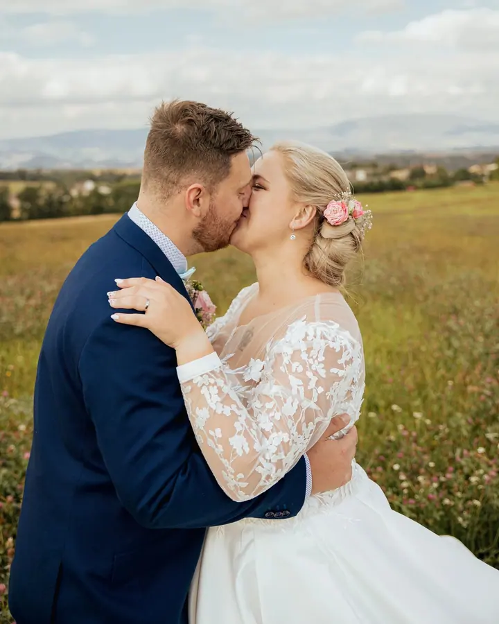
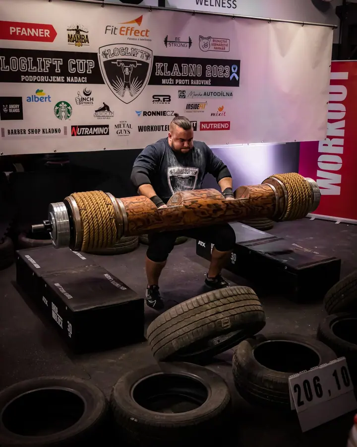
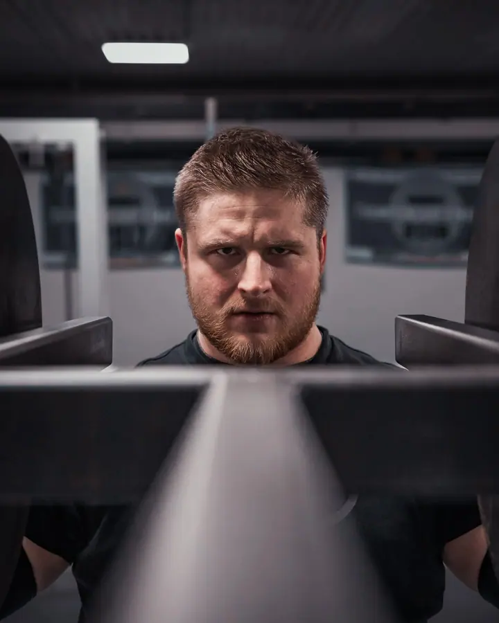
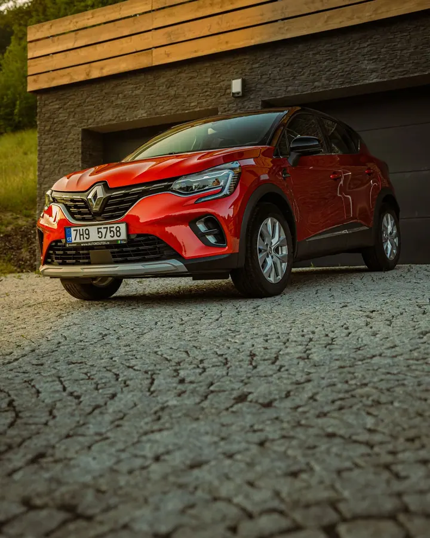
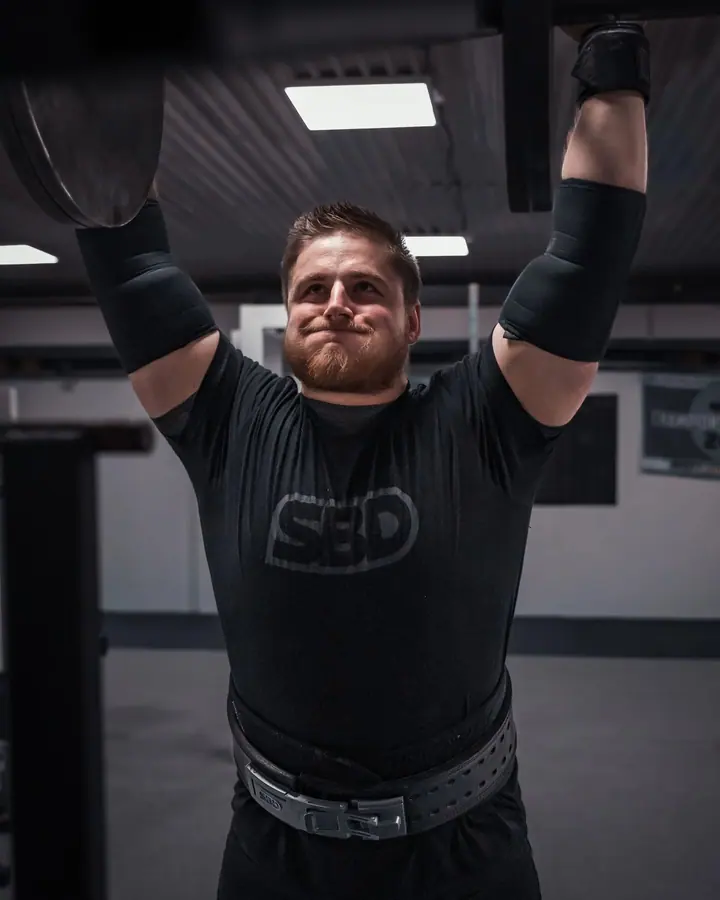
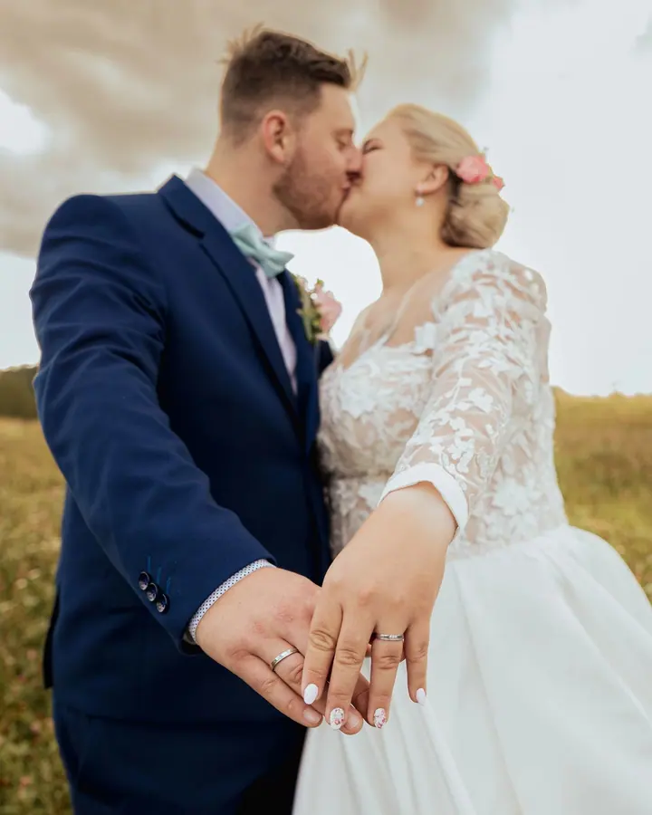
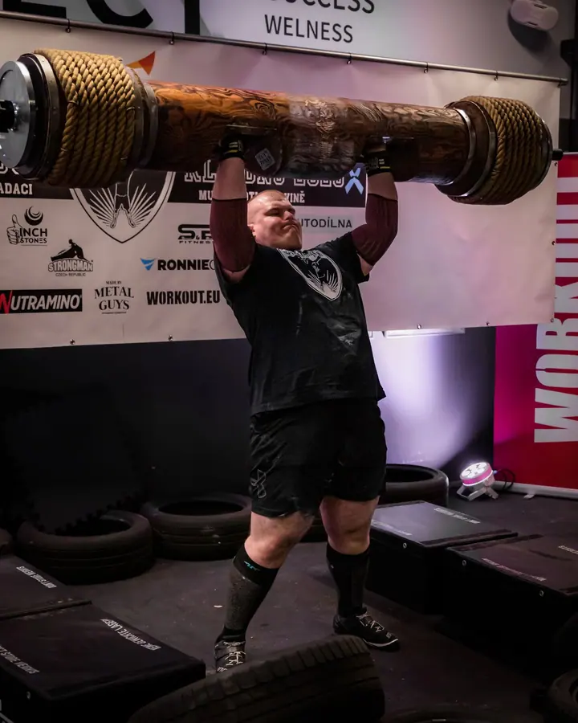
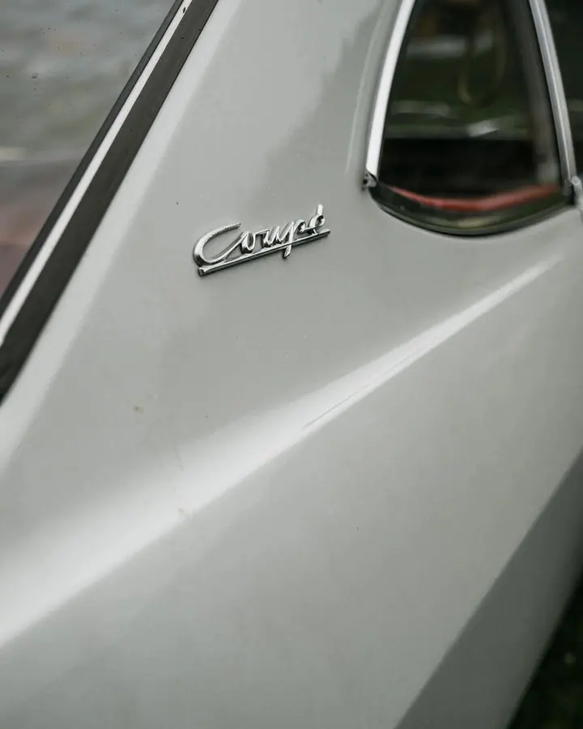

01 / 04
Svatby
Na svatbě jsem spíš tichý pozorovatel, aby fotky byly přirozené a nenucené. Vybrat si můžete malý, střední nebo velký balíček podle toho, jak dlouho mám být s vámi.
Zeptat se na termín→







Fotky se smyslem pro detail a scénu
Zeptat se na termín →(01) Ahoj
Jmenuji se Jiří Chutic a jsem fotograf a creator se smyslem pro detail a scénu. Fotím svatby , auta i sportovní a společenské akce . Focení se aktivně věnuji od roku 2021 a pořád se zdokonaluji.
(02) Co fotím
01 / 04
Na svatbě jsem spíš tichý pozorovatel, aby fotky byly přirozené a nenucené. Vybrat si můžete malý, střední nebo velký balíček podle toho, jak dlouho mám být s vámi.
Zeptat se na termín→02 / 04
Rád nafotím vaše čtyřkolové miláčky i produkty. Hledám pro ně scénu a světlo, ve kterém vynikne každý detail.
Zeptat se na termín→03 / 04
Fotím apartmány, interiéry, reality i architekturu. Prostor ukážu tak, aby se v něm člověk chtěl hned ubytovat.
Zeptat se na termín→Dále nabízím
Fotím sportovní i společenské akce, od závodů po firemní večery. Zachytím atmosféru, emoce i výkon sportovců.
↗(04) Postup
Od první zprávy po hotovou galerii.
Krok 1 z 4
Napište mi přes kontaktní formulář, e-mailem nebo zavolejte. Doptám se na pár doplňujících otázek a řeknu vám cenu.
Krok 2 z 4
Sejdeme se a ujasníme si detaily obřadu, místa i vaše speciální přání. Zároveň zjistíme, jestli si sedneme, i to je pro spolupráci důležité.
Krok 3 z 4
Fotím nenápadně jako tichý pozorovatel, aby fotky byly přirozené. Vás nastavím jen při skupinových a novomanželských fotkách.
Krok 4 z 4
Fotky pečlivě upravím a předám. Podle balíčku jich je zhruba 100 až 600, ke střednímu a velkému balíčku přidám i fotoobraz na plátno.
Fotograf má být spíš tichý pozorovatel
(05) Za objektivem
Jsem zapálený fotograf, kterého baví hledat v každé zakázce detail a správnou scénu. Rád pro vás nafotím portréty, svatbu, vaše čtyřkolové miláčky, ale i produkty, reality, architekturu a sportovní i společenské akce.
Na svatbách zastávám názor, že fotograf má být spíše tichý pozorovatel. Díky tomu vznikají přirozené fotky, které zachovají autenticitu okamžiku. Nastavovat vás budu jen u skupinových a novomanželských fotek.
Fotím v okolí Liberce a Jablonce nad Nisou i ve středních Čechách. Mimo focení si rád dojdu zacvičit a pobavím se o autech, technologiích a sociálních sítích.
Jiří
Jiří Chutic · Svatební a komerční fotograf
Malý balíček na cca 3–4 hodiny (obřad, skupinky, novomanželské fotky), střední na cca 6 hodin včetně příprav a výzdoby a velký na 10 hodin i více, kdy s vámi zůstanu až do večera.
Záleží na balíčku a velikosti svatby. U malého je to cca 100–200 upravených fotek, u středního 200–350 a u velkého 350–600.
Cenu určuji individuálně. Ozvěte se mi, doptám se na pár doplňujících otázek a pošlu vám nabídku.
Napište mi nebo zavolejte. Rád s vámi proberu řešení přesně podle vašich představ, stejně tak u focení aut, nemovitostí nebo akcí.
(07) Kontakt
Napište pár vět o tom, co si představujete, a termín, který se vám hodí.